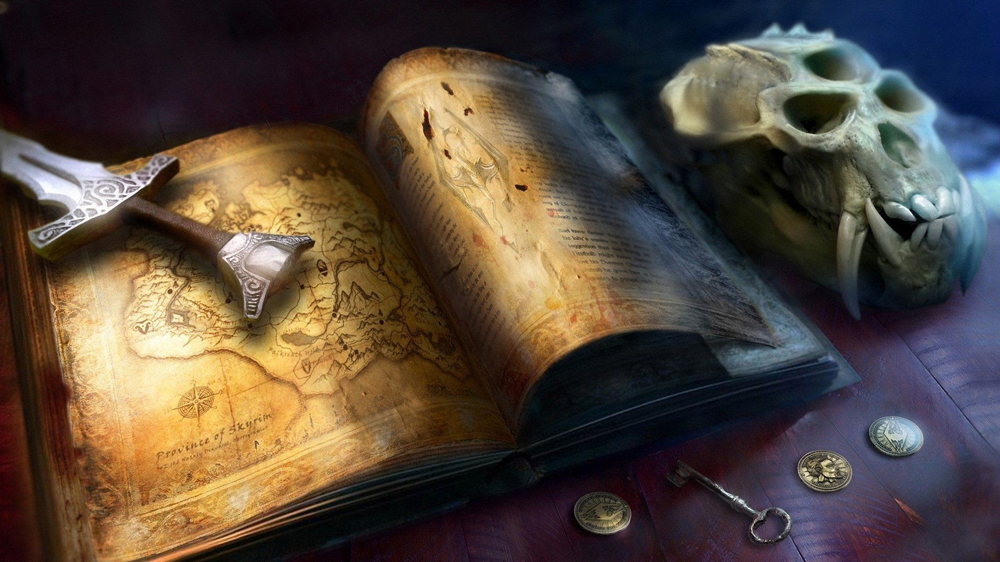

The Elder Scrolls V: Skyrim
◂Information source▸
Общие данные
Эта провинция — вторая родина нордов. Скайрим, известный также как Старое Королевство или Отчизна, был регионом Тамриэля, заселённым людьми, бежавшими с замерзающего континента Атмора. Правителем Скайрима является Верховный король, которого выбирает Собрание ярлов. Эта традиция была установлена после разрушительной войны Престолонаследия. Нарушение этой традиции карается смертью, как в случае убийства Ульфриком Буревестником короля Торуга. Верховному королю подчиняются все ярлы. В целом модель власти в Скайриме напоминает федерацию, так как владения имеют некое подобие автономии, но при этом подчиняются Королю.
